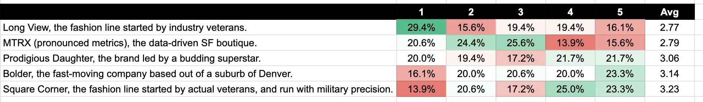

written by Roni Kobrosly on 2024-12-08 | tags: career data
I reached out to Benn over LinkedIn and he was gracious enough to give me his poll results! Thanks for helping a total stranger, Benn!
So just to remind you, these were the startups his readers were betting up being most successful:
1) "Long View": Their executives have been working in fashion for decades. They know the market, they say; our experience, and the intuition we’ve developed on top of it, will make us successful.
2) "Bolder": is led by executives who’ve been in the industry for less time. But true to their name, they believe in moving fast and making things, in not overthinking strategy, and that decisiveness is often more important than being right. As the last slide of their pitch deck says, “We fail when we look back.”
3) "Prodigious Daughter": is run by a thirty year-old wonder kid. In just a few years, she’s already put her stamp on fast fashion. Though her company is average in other ways, it has her generational talent.
4) "Square Corner": emphasizes operational excellence. Their leadership team writes emails with military precision, never never misses 7:30 a.m. standup, and always sends out board meeting slides, a pre-read, and a Loom explainer video exactly five days early.
5) The final startup is "MTRX": believes data will be their competitive edge. They've taken all of the MBA courses at Wharton on data-driven business practices. They are all in on data and want to make their own modern data-stack.
Here are the results:

In descending over:
5) Long View: People thought the old timey veterans would be least successful. So much for industry-specific experience.
4) MTRX: Wow, so they share his lack of faith in the transformative magic of data. Maybe there's some selection bias at play here. I mean, these are people reading Benn's blog and presumably share his views.
3) Prodigious Daughter: people have more faith in a budding fashion superstar than on science when it comes to getting a business edge.
2) Bolder: the fast-moving, break things first, ask questions later company.
1) Square Corner: I'm quite shocked!! Put aside the lattes, remote work, and hoodies, I guess people have faith in industry experience and a militant precision.